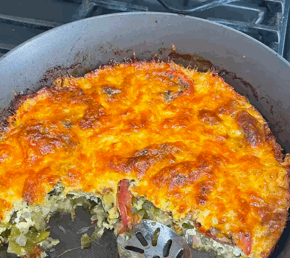

Loaded Vegetarian Quiche

Description
This vegetable quiche recipe comes from a combination of other quiche recipes.
Ingredients
- 1 (9 inch) deep-dish pie crust
- 1 tablespoon olive oil
- ½ cup sliced onion
- ½ cup chopped green bell pepper
- ½ cup mushrooms, sliced
- ½ cup chopped zucchini
- 1 large tomato, sliced
- 2 tablespoons all-purpose flour
- 2 teaspoons dried basil
- 3 large eggs, beaten
- ½ cup milk
- ½ teaspoon salt
- ¼ teaspoon ground black pepper
- 1 ½ cups shredded Colby-Jack cheese
Instructions
- Preheat the oven to 400 degrees F (200 degrees C).
- Bake pie crust in preheated oven until firm, about 8 minutes.
- Remove crust from the oven and set aside. Reduce oven to 350 degrees F (175 degrees C).
- Heat olive oil in a large skillet over medium heat.
Add onion, bell pepper, mushrooms, and zucchini and cook, stirring, until softened, 5 to 7 minutes.
Remove vegetables from skillet and set aside.
- Sprinkle tomato slices with flour and basil;
cook in the skillet over medium heat for 1 minute per side. Set aside.
- Whisk eggs, milk, salt, and pepper together in a small bowl.
- Spread 1 cup cheese in the bottom of pie crust.
Layer vegetable mixture over the cheese, then top with tomato slices.
Pour egg mixture over top and sprinkle with remaining 1/2 cup cheese.
- Bake in the preheated oven until a knife inserted near the center comes out clean, 40 to 45 minutes.
Cool 5 minutes before serving.
Nutrition Facts
Per Serving: 284 calories; protein 10.5g; carbohydrates 17.2g; fat 19.6g; cholesterol 95.5mg; sodium 524mg.